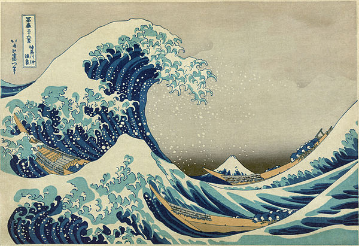

CMS 450 Test Web Page
About
This is a simple web page created using basic HTML.
Some things to know about HTML
- HTML stands for Hypertext Markup Language
- HTML specifies the content and structure of a web page
- Web browsers parse and display HTML
- Other tools, like Cascading Style Sheets (CSS), are used to control the presentation of HTML content
Links
The Web is built from sites linking to other sites.
Here's a link: Rollins College
Image
HTML documents can contain other kinds of media, such as images.
